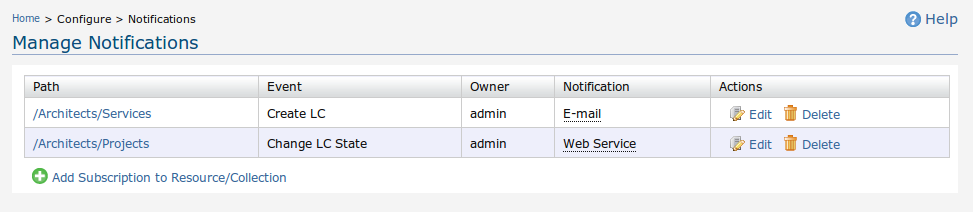
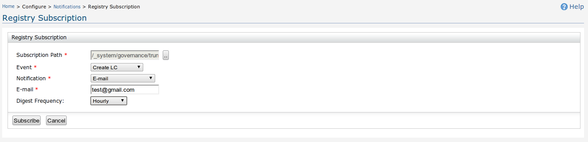
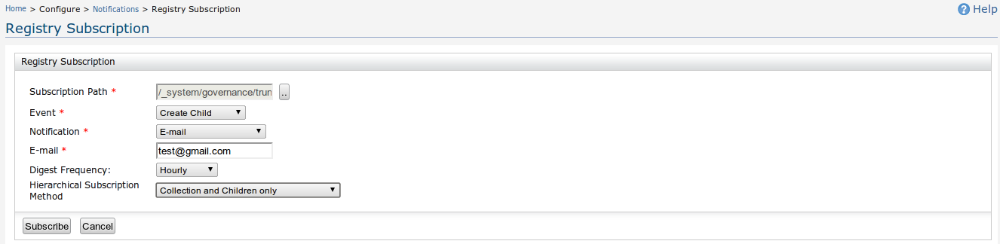
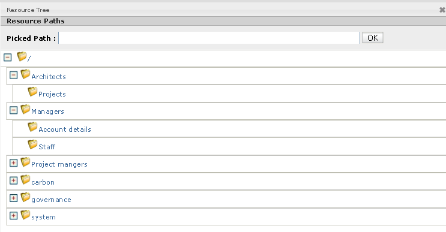
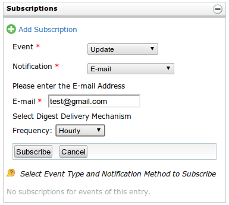
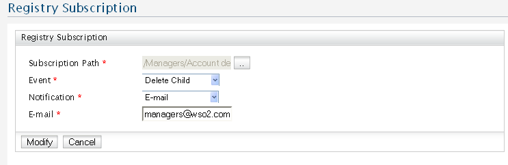

The Notifications feature can be used to generate notifications for events that occur as a result of performing operations. In order to receive notifications, users will have to create a subscription to a particular event along with a specified notification method (which can be an e-mail alert or a SOAP message). Each subscription is associated with a resource or collection on the registry. The Manage Notifications page can be used to create, edit, or delete subscriptions to notifications on various operations performed on resources and collections stored in the registry.
If you currently have made any subscriptions, these will be listed in a table, and beneath it you can click the link to add a new subscription.

Figure 1: Manage Notifications Page
If you currently have no subscriptions, a message indicating that you have not got any subscriptions followed by the link to add a new subscription. On the table (seen in Figure 1 above), you can click on the Path to browse the corresponding resource or collection. If you have subscribed with the notification method User Profile, You can also browse the user's default profile by clicking on the User Profile link under the Notification tab.
When you click on a link to add a new subscription you will be forwarded to a dedicated page through which you can subscribe to notifications made on resources and collections of a single or many types.

Figure 2: Registry Subscription Page to a Resource
For Collections there is an additional facility of creating Hierarchical Subscriptions if needed. By default when a user adds a subscription to a Collection it will only get added to that collection. Similarly the user can add a subscription to that collection and its immediate child resources by selecting the option Collection and Children only or to that collection and all of its child resources by selecting the option Collection,Children and Grand Children.

Figure 3: Registry Subscription Page to a Collection
To start with, you have to specify the Subscription Path. To do so, you simply need to click on the .. button seen in Figure 2. This will open a Resource Tree Browser as seen in Figure 3 below.

Figure 4: Resource Tree
Selecting the Subscription Path can be done by clicking on any of the listed resources and collections, and pressing the OK button.
The next step in adding a subscription involves selecting the event type and the notification method. The event types supported by default are as follows
Please note that some of these events may not be available for certain types resources and collections. We support a variety of notification methods as well.
Based on the notification method you select, you may be required to provide additional information, such as the e-mail address to use of the name of the user of whom the profile will be used. When using E-mail, User Profile or Group Profile is used you can also specify the Digest Frequency as None, Hourly, Daily, Weekly, Fortnightly or Monthly. Having done this step, you will have to click on the Subscribe button to add a subscription (see Figure 2 above).
You can also add new subscriptions to a resource/collection by browsing that resource/collection using the resource browser and clicking Add Subscription link in Subscriptions box that appears in the right hand side pane of the resource browser (Figure 3)

Figure 5: Adding a Subscription Using the Resource Browser to a Resource
Figure 5: Adding a Subscription Using the Resource Browser to a Collection
You can delete an existing subscription (or unsubscribe) by clicking on the Delete button in the respective entry corresponding to the subscription you have made. Similarly you also can edit a subscription (or re-subscribe) that you have made by clicking on the Edit button. Editing a subscription is similar to adding a subscription except for the fact that the details that you had to enter before will be pre-populated based on the current subscription details. Once you are done with the changes to the various fields, click on the Modify button to re-subscribe.

Figure 6: Edit Registry Subscription Page